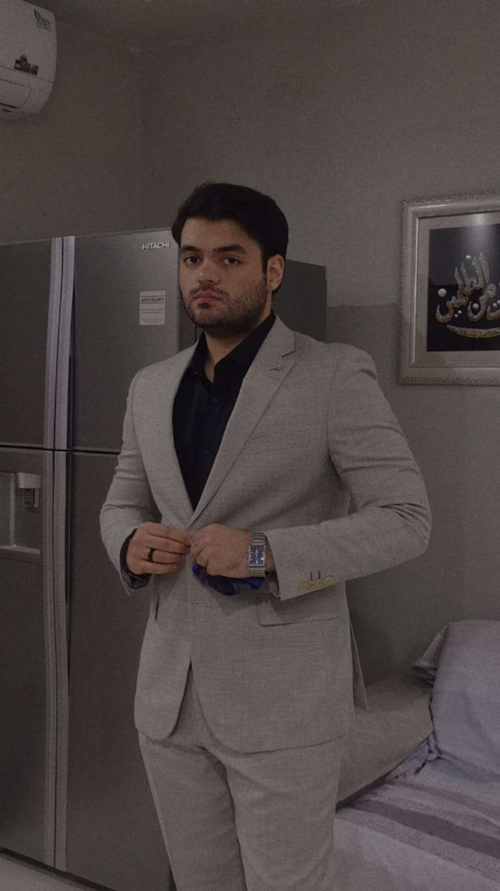

SYED JAWAD HAIDER
Summary
A person who is hardworking, passionate about studies and helping people unconditionally. Punctual and motivated to do his best in any given field of study or work while being accepting of different people and their complexity. Have a high goal of pursuing a career in cyber security and providing the public with safety and privacy while maintaining accessibility and freedoms. Volunteer for community services and actively seeking to help as many people possible without any other motive. you can find out more about my hobbies if you want.
education
studied at beaconaskari olevel school and beaconhouse PECHS for ALEVELS with a ielts certificate and cyber security analyst course completion from coursera.
- Gotten 6 A* and 2 As in Olevels, subjects being physics, chemistry, maths, computer, English, Islamic
studies, pakistan social studies and urdu
- Gotten A B C in alevels, in physics, computer, maths respectively
- 7.5 band achieved in ielts
- Have completed Google's cybersecurity security analyst certificate through coursera
skills
- Good problem solving ability
- Good writing ability
- Passionate about art
- Coding and developing further coding knowledge (python)
- Good communication skills in casual and professional environments
awards/certificates/accomplishments
- Have participated in taekwondo tournaments and achieved first place
- Achieved bronze level in iklc ( international kangaroo linguistics competition)
- Volunteered for national institute of child health ( NICH )
- Teacher assistant for physics and computer in beacon house pechs campus
- Volunteered as an intern in naujawan of owe
- Volunteered as an intern in nichs children hospital
work experience
- worked as customer service speacialist at ibex